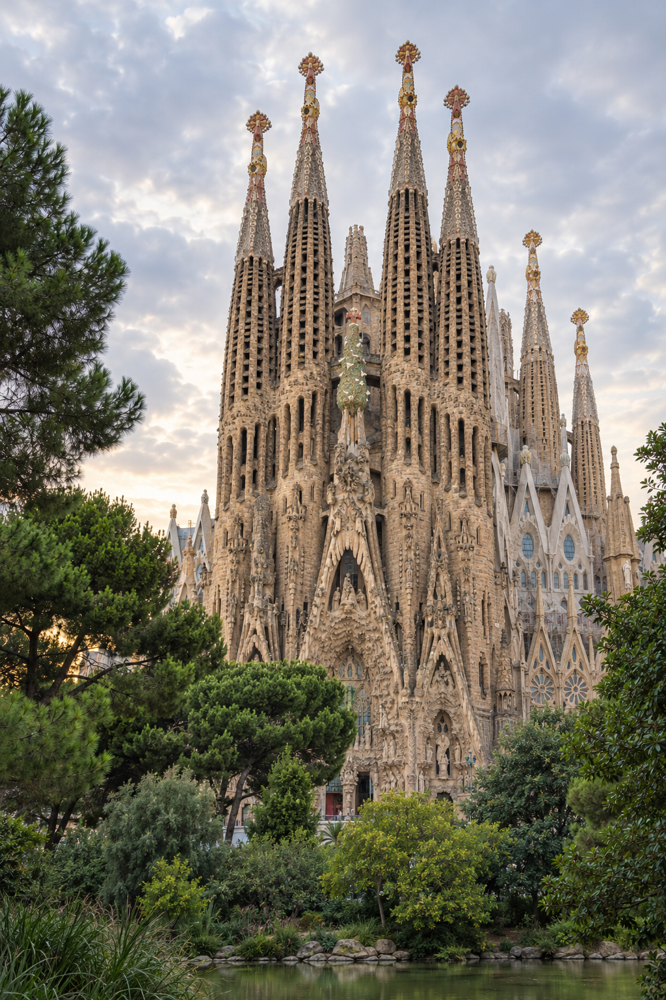

9:41
⌁ ▰
Wandr AI
♙
发现旅途之美
AI智能规划行程
专属于你的欧洲旅行灵感
目的地
⌕
☷
✣
AI行程规划
几秒钟内创建你的完美行程
↗
当前行程
查看全部
罗马，意大利
10天 · 4月15日 – 4月25日
个人行程
探索目的地
圣托里尼

巴塞罗那
‹
规划新行程
目的地
圣托里尼，希腊
⌄
你的 AI 行程即将备妥
▦
旅行日期
–
7天
♧
旅行人数
位成人
旅行风格
文化与历史
美食探索
摄影创作
休闲放松
▱
人均预算
15,000 – 25,000
✣ 立即创建行程
‹
AI 为你规划的旅程
♡
你的下一段旅程
巴塞罗那，西班牙
3天 · 文化与历史 · 12个地点
行程安排
已规划
12
站
⌖
查看路线地图
12 站串起一段旅程
↗
⌂
HOME
◫
EXPLORE
▤
TRIPS
♙
PROFILE
下一站想去哪里？
目的地
一条慢慢走的路线
行程草案 · 站点示意
让旅程慢下来。
偏好保存在本页草案中，规划前可随时调整。